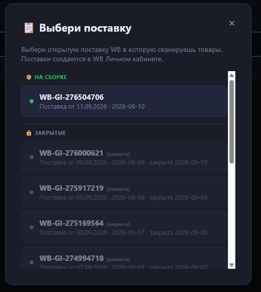
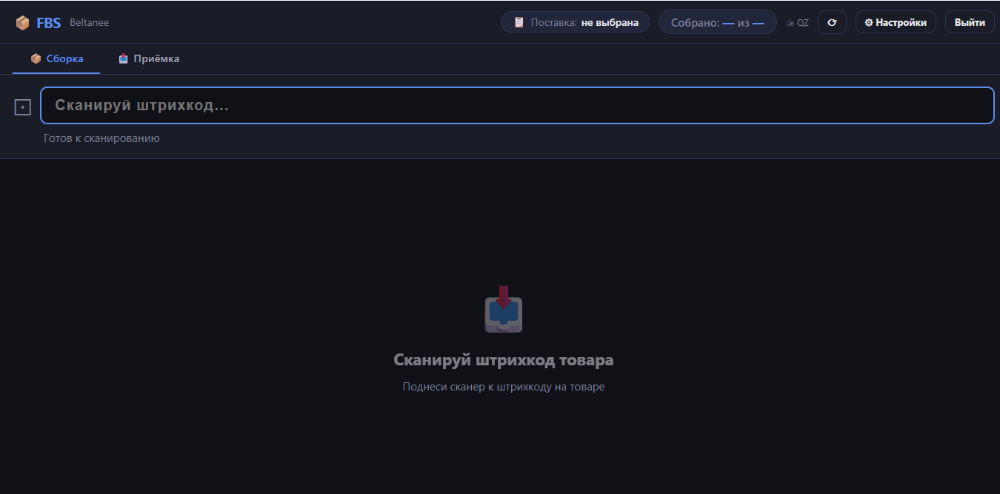
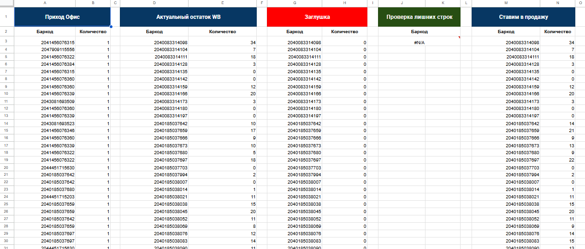

Рабочие инструкции.
Выберите задачу и следуйте шагам.
FBS SCANER
Выбор поставки и сканирование изделий.
Соблюдайте этот порядок для каждого изделия.
Авторизуйтесь
Откройте FBS SCANER. Логин и пароль получите у ответственного.
Дождитесь полной загрузки
После входа дождитесь, пока страница полностью загрузится.
Выберите актуальную поставку
Нажмите «Поставка» в верхней части экрана и выберите текущую заявку.
Актуальная поставка отмечена зелёным огоньком.
Дождитесь загрузки поставки
Начинайте работу только после загрузки выбранной поставки.
Начните сканирование
У каждого изделия сначала отсканируйте баркод, затем КИЗ. После этого переходите к следующему изделию.

Как выглядит экран сканирования +

Конвертер сборочных заданий
Подготовьте удобный список для сборки.
Скачайте сборочное задание
В личном кабинете Wildberries скачайте сборочное задание в формате Excel.
Загрузите файл в конвертер
Откройте конвертер и загрузите скачанное сборочное задание.
Скачайте подготовленный PDF
Дождитесь обработки и сохраните готовый PDF-файл.
Распечатайте
Откройте PDF и отправьте его на печать.
FBS Хранение
Возвраты, актуальные остатки и возврат товаров в продажу.
Какой лист использовать
- Сводная
- Актуальные остатки позиций.
- Возврат в продажу
- Сканируйте баркоды изделий, которые забрали из ПВЗ, чтобы корректно посчитать возвраты.
- WB Наличие
- Загружайте актуальный отчёт об остатках WB: «Управление остатками» → «Скачать файл с товарами».
- Пополнение остатков
- Объединяйте поступление со свежими остатками WB и готовьте файл для продажи.
Пополнение остатков — по порядку
Это приостанавливает поступление новых заказов на эти позиции, пока вы работаете с заявкой.
Добавьте поступление
На листе «Пополнение остатков» в первые столбцы A:B «Приход Офис» скопируйте баркоды и количество: из возвратов или актуальной заявки.
Обновите актуальный остаток WB
В личном кабинете откройте «Управление остатками» → «Скачать файл с товарами». Сразу загрузите свежий отчёт на лист «WB Наличие», чтобы обновить баркоды и количества в таблице.
Сразу загрузите заглушку на WB
Используйте блок G:H «Заглушка»: баркоды и нулевые количества. Заглушка должна охватывать позиции, с которыми вы работаете.
Проверьте исходные остатки
В блоке D:E «Актуальный остаток WB» должны быть количества из отчёта, скачанного до загрузки заглушки. Сохраните эти значения для расчёта пополнения.
Проверьте результат
Посмотрите блок «Проверка лишних строк» и разберите найденные несовпадения. В M:N «Ставим в продажу» складываются сохранённые остатки WB и поступление.
Подготовьте файл и загрузите на WB
Создайте отчёт из блока «Ставим в продажу»: только баркод и количество. Загрузите его в управление остатками WB.

Планирование перемещений
От свежих отчётов WB до зафиксированной заявки.
Отчёт WB «Завершённые» за последние 14 дней + свежий отчёт по возвратам.
Подготовьте два отчёта
Скачайте из WB отчёт «Завершённые» за последние 14 дней в Excel и актуальный отчёт по возвратам.
Загрузите отчёты в папки Google Drive
Продажи — в 01_WB_Продажи_Входящие.
Возвраты — в 02_WB_Возвраты_Входящие.Используйте рабочие папки планировщика. Доступ к ним получите у ответственного.
Запустите расчёт
В таблице откройте меню «🚀 Планирование FBS» → «▶ Запустить расчет».
Дождитесь завершения скрипта
Планировщик импортирует свежие отчёты, пересчитает данные и сформирует предварительную заявку. Не запускайте расчёт повторно, пока он выполняется.
Проверьте заявку и дополните её
Откройте лист «11_Заявка_на_перемещение». Проверьте товары, размеры, количества и размещение. Позиции для ручного добавления внесите в оранжевые строки блока «Новинки / ручной ввод».
Оранжевые строки — для ручного добавления позиций.Зафиксируйте заявку и создайте PDF
После проверки выберите «🚀 Планирование FBS» → «📄 Зафиксировать заявку + PDF». Дождитесь завершения: создаются история заявки, резерв коробок и PDF в Google Drive.
Обычный расчёт и предварительный PDF не резервируют коробки. Для рабочей заявки используйте «Зафиксировать заявку + PDF».